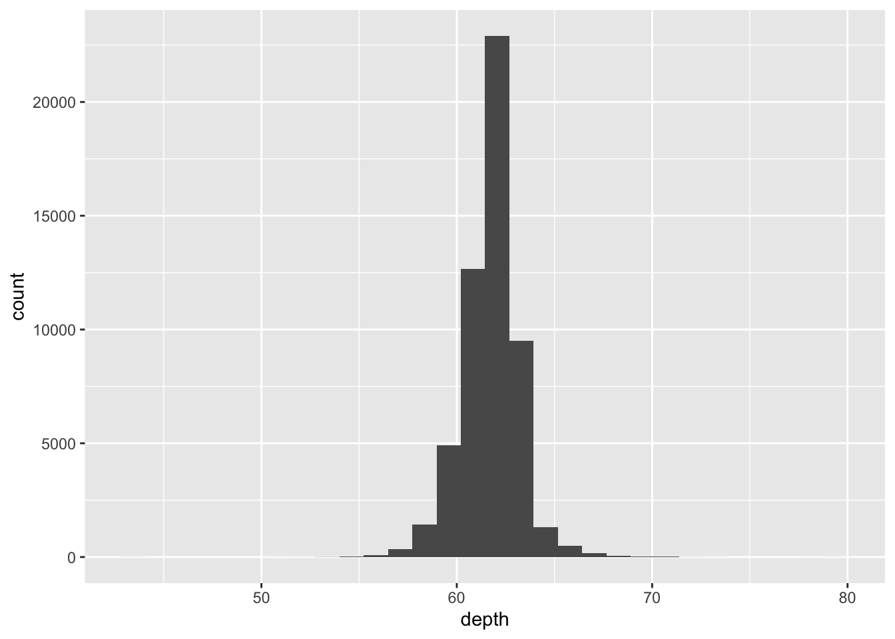
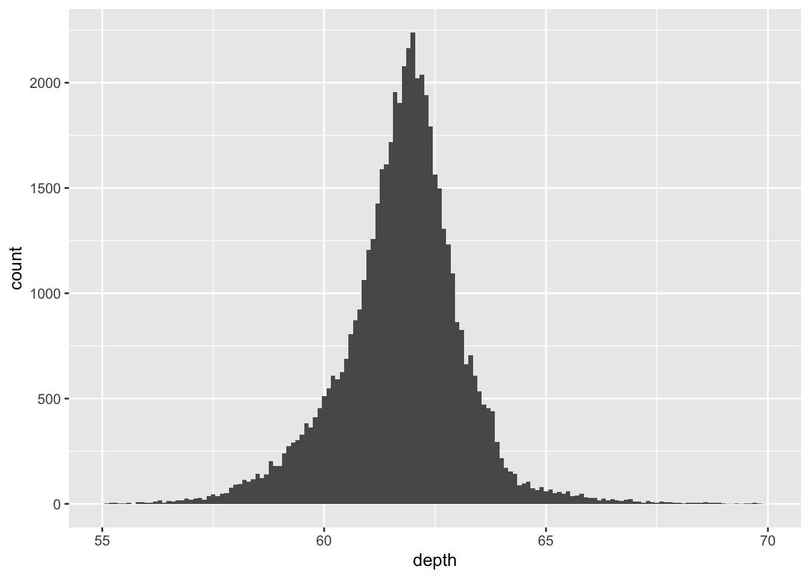
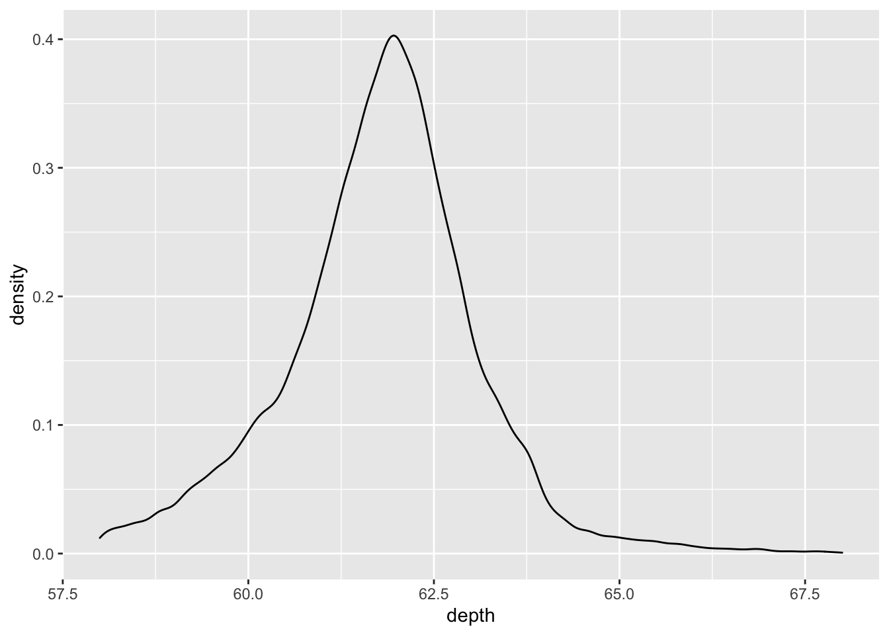
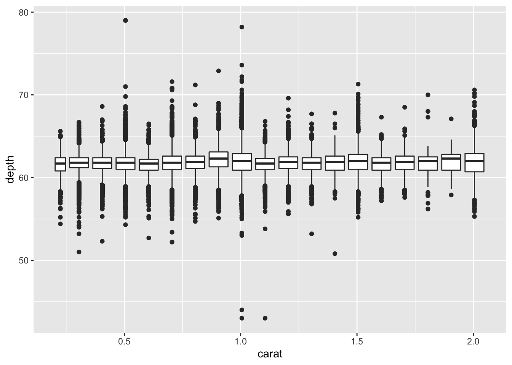
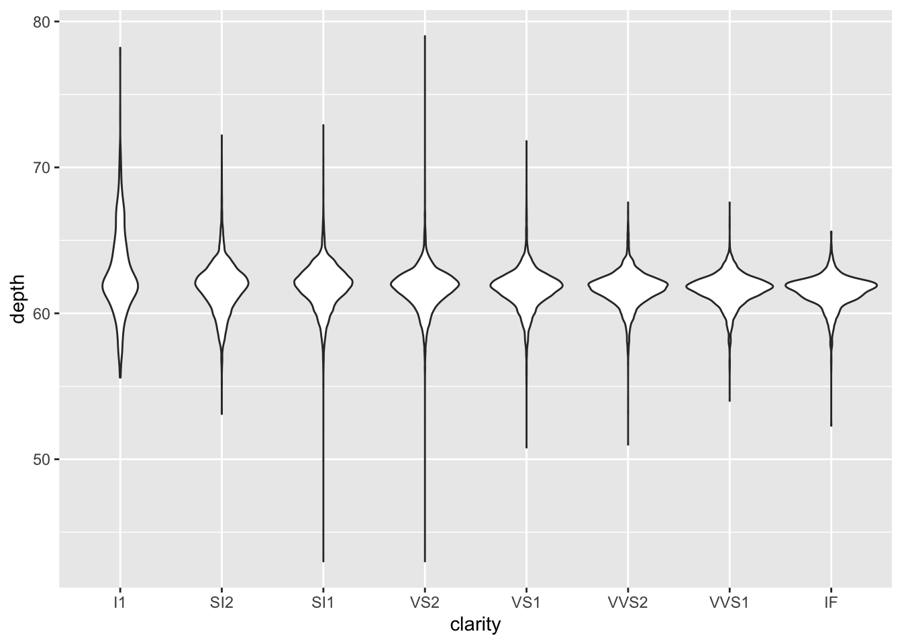
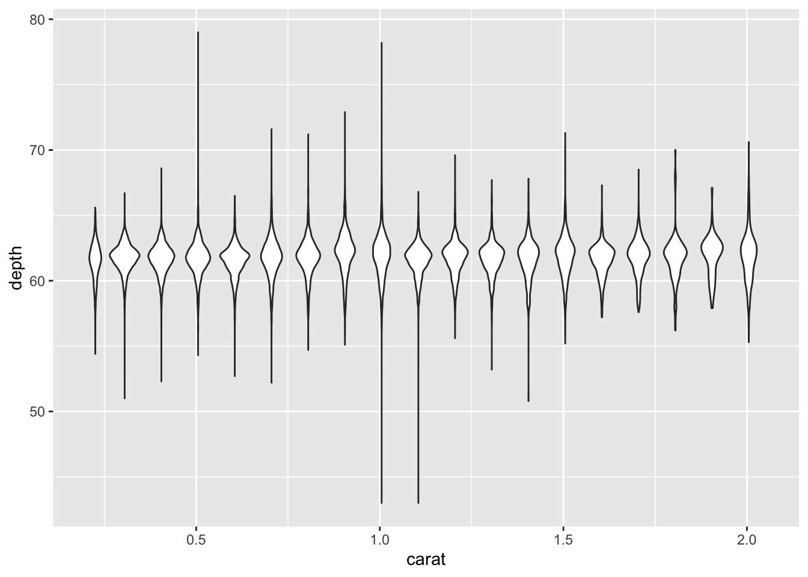

5.4 Displaying distributions
Using built-in diamonds dataset
Figure 5.1: Diamond Dimensions
For 1-Dimensional continuous data (1d), the histogram is arguably the most important geom
## `stat_bin()` using `bins = 30`. Pick better value with `binwidth`.
## Warning: Removed 45 rows containing non-finite values (stat_bin).## Warning: Removed 2 rows containing missing values (geom_bar).
Never rely on the defaults. Always adjust your bin or xlim to “zoom” in our out of your data. There is no hard or fast rule, only experimentation to discover coorelation in your plot.
For your audience/reader, ensure you add a caption for your scale, for example binwidth.
Three ways to compare distribution:
- Show small multiples of the histogram, facet_wrap(~ var).
- Use colour and a frequency polygon, geom_freqpoly().
- Use a “conditional density plot”, geom_histogram(position = "fill").
ggplot(diamonds, aes(depth)) +
geom_freqpoly(aes(colour = cut), binwidth = 0.1, na.rm = TRUE) +
xlim(58, 68) +
theme(legend.position = "none")
ggplot(diamonds, aes(depth)) +
geom_histogram(aes(fill = cut), binwidth = 0.1, position = "fill",
na.rm = TRUE) +
xlim(58, 68) +
theme(legend.position = "none")
You can also plot density using geom_density(). Use a density plot when you know that the underlying density is smooth, continuous and unbounded.
ggplot(diamonds, aes(depth)) +
geom_density(na.rm = TRUE) +
xlim(58, 68) +
theme(legend.position = "none")
ggplot(diamonds, aes(depth, fill = cut, colour = cut)) +
geom_density(alpha = 0.2, na.rm = TRUE) +
xlim(58, 68) +
theme(legend.position = "none")
It is often the case and advisable to sacrifice quality for quantity. The following three types of graph provide examples of this thought.
geom_boxplot():

ggplot(diamonds, aes(carat, depth)) +
geom_boxplot(aes(group = cut_width(carat, 0.1))) +
xlim(NA, 2.05)## Warning: Removed 997 rows containing missing values (stat_boxplot).
geom_violin():

ggplot(diamonds, aes(carat, depth)) +
geom_violin(aes(group = cut_width(carat, 0.1))) +
xlim(NA, 2.05)## Warning: Removed 997 rows containing non-finite values (stat_ydensity).
geom_dotplot():
5.4.1 Exercise:
What binwidth tells you the most interesting story about the distribution of
carat? >The number of bins or the binwidth should be exploration exercise. There is not direct hard or fast rule for scaling the binwidth. What is important is to find the appropriate size that best captures the representation (or distribution) of your analysis. This correlates to your story as you are explaining the importance. Find a binwidth that best captures your ideas.Draw a histogram of
price. What interesting patterns do you see?

The smaller the quantity (assuming quality), the higher the price. I presume that carat size would also have a strong correlation with quantity and price.
- How does the distribution of
pricevary withclarity?


I presume using different geoms, the higher the clarity, the higher the price, the fewer the quantity.
- Overlay a frequency polygon and density plot of
depth. What computed variable do you need to map toyto make the two plots comparable? (You can either modifygeom_freqpoly()orgeom_density().)
Not completed.